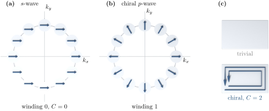

Page 16 of 16 of this session
5.20 Closing summary
This session used three tools from before. These are the mean-field theory of Section 1.12, the pairing term and the broken gauge symmetry of Section 1.15, and the Chern number (3.4) and the SSH model of Section 3.9 from Session 3. With them we found the following results.
Superconductivity is a mean-field, attractive-interaction phenomenon. Starting from an attractive Hubbard chain (5.2), pairing mean-field theory gives the order parameter \(\Delta_n = U\langle c_{n\downarrow}c_{n\uparrow}\rangle\) (5.3) and the mean-field Hamiltonian (5.4).
Pairing breaks particle-number conservation down to parity, as we saw in Section 5.6, and this is the same as the statement that gauge symmetry is spontaneously broken. The pairing term gets a phase \(e^{-2i\varphi}\) under the gauge transformation (5.5), unlike ordinary bilinear terms.
Flux quantization, \(\Phi = n\, h/2e\) (5.1), is a direct and measurable macroscopic consequence of this broken gauge symmetry, at the same level as the conductance quantum of the quantum Hall effect of Session 4.
The Nambu spinor (5.6) and the Bogoliubov-de Gennes Hamiltonian (5.7) and (5.8) are the tools that allow us to diagonalize any mean-field superconducting Hamiltonian. They give the quasiparticle dispersion \(E(\mathbf k) = \pm\sqrt{\varepsilon(\mathbf k)^2 + |\Delta(\mathbf k)|^2}\) (5.9), and a gap opens at the original Fermi surface regardless of the details of the microscopic dispersion.
The symmetry of \(\Delta(\mathbf k)\) classifies the superconductor. It can be singlet, even in \(\mathbf k\), or triplet, odd in \(\mathbf k\), as in (5.11) and (5.12), with a further classification by angular momentum (\(L=0,1,2,\dots\)) (5.14) that gives s-, p- and d-wave order. The last one is realized in the cuprate high-\(T_c\) superconductors through the nodal \(d_{x^2-y^2}\) gap (5.13).
Gaps with the same spectrum can have different topology. Trivial s-wave pairing (\(C=0\)) and chiral p-wave pairing (5.15) (\(C=\pm2\)) both fully gap the same Fermi surface. Only the topological one has gapless edge modes, which is the bulk-boundary correspondence of Section 3.7.
The Kitaev chain (5.19) is the SSH model in Majorana language. At the fine-tuned point it reduces to \(H = it\sum_n \gamma_{2n}\gamma_{2n+1}\) (5.21), which leaves two unpaired end Majoranas with zero energy. These survive away from the fine-tuned point in the whole topological phase \(|\mu|<2t\) (5.22).
Majoranas are non-Abelian anyons. Braiding them acts as a unitary (5.23) on a topologically degenerate ground-state manifold. Exchanges that share a Majorana do not commute, which is the basis of the proposed schemes for topological quantum computing.

In a spinless chain the onsite term \(c_nc_n\) vanishes. Which pairing is then allowed, and what is its parity?
Show the answers
- A. ✗ False
This is false. The onsite term is \(c_nc_n=0\) by the Pauli principle. If we write \(\sum_k c_kc_{-k}\) we get zero as well, since \(c_kc_{-k}=-c_{-k}c_k\) cancels pairs of terms.
- B. ✓ True
This is true. The Pauli principle gives \(c_n^2=0\), so the pairing lives on a bond. It gives \(\Delta(k)=2i\Delta\sin k\), which is odd, so by (5.12) it is a spinless \(p\)-wave state.
\[\textbf{Spin triplet (odd parity):} \quad \Delta(\mathbf k) = -\Delta(-\mathbf k), \qquad \Delta_{\sigma\sigma'} = +\Delta_{\sigma'\sigma}\ \text{(spin-symmetric)}. \tag{5.12}\]
- C. ✗ False
This is false. The bond term \(c_nc_{n+1}\) changes sign when we exchange the two fermions, so it can only give \(\sin k\). A \(\cos k\) function would multiply \(c_kc_{-k}\) and cancel, as the sum vanishes by antisymmetry.
In this session we followed superconductivity from the bare pairing order parameter of Session 1 to Nambu spinors, Bogoliubov-de Gennes Hamiltonians, the singlet and triplet classification and the Majorana zero modes of the Kitaev chain. The other branch of the Hubbard model, with \(U>0\), gives magnetism, where time-reversal symmetry is broken instead of gauge symmetry. Session 6 starts from the same chain as (5.2), now on its repulsive side, and gives magnetism the same depth of treatment.
After this session we can do the following tasks, and each of them has the section that teaches it.
- Compute the flux quantum \(h/2e\), and say where the factor 2 comes from. This is in Section 5.2.
- Decouple an attractive interaction in the pairing channel, and say why \(\Delta\) vanishes for \(U>0\). This is in Section 5.5.
- Say why a superconductor has a fixed fermion parity and no fixed electron number. This is in Section 5.6 and Section 5.7.
- Write the BdG matrix of one band, and read the gap \(2|\Delta|\) between its two branches at the Fermi points. This is in Section 5.8 and Section 5.9.
- Tell a full gap from a nodal one, from where the nodes of \(\Delta(\mathbf k)\) meet the Fermi surface. This is in Section 5.10 and Section 5.13.
- Decide from the parity of \(\Delta(\mathbf k)\) whether a pairing is a spin singlet or a spin triplet. This is in Section 5.11 and Section 5.12.
- Tell s-wave from chiral p-wave pairing by the winding of the phase of \(\Delta(\mathbf k)\) and by the Chern number. This is in Section 5.14.
- Find the end Majoranas of a Kitaev chain, and the window \(|\mu|<2t\) of its topological phase. This is in Section 5.16 and Section 5.17.
- Name the parts that make a Kitaev chain out of the edge of a quantum spin Hall insulator. This is in Section 5.18.
- Say why two braids that share a Majorana do not commute. This is in Section 5.19.
Fermi statistics ties the spin of a pair to the parity of \(\Delta(\mathbf k)\). Which pairing is a spin triplet?
Show the answers
- A. ✗ False
This is false. A constant is even, \(\Delta(-\mathbf k)=\Delta(\mathbf k)\), so the pair is a spin singlet. This is the s-wave pairing of the onsite term.
- B. ✗ False
This is false. The cosines are even in \(\mathbf k\). At \(\mathbf k=(\pi/2,0)\) and at \(-\mathbf k\) the function is \(-\Delta_0\) in both cases, so the pair is a singlet, the d-wave pairing of the cuprates.
- C. ✓ True
This is true. The sines are odd, \(\Delta(-\mathbf k)=-\Delta(\mathbf k)\), so by (5.12) the pair is a spin triplet. This is the chiral p-wave pairing.
\[\textbf{Spin triplet (odd parity):} \quad \Delta(\mathbf k) = -\Delta(-\mathbf k), \qquad \Delta_{\sigma\sigma'} = +\Delta_{\sigma'\sigma}\ \text{(spin-symmetric)}. \tag{5.12}\]
Each picture shows \(\Delta(\mathbf k)\) on a Fermi pocket around \(\Gamma\) of the square lattice. Each arrow is the complex number \(\Delta(\mathbf k)\) at its point. The dashed square is the first Brillouin zone. Which pairing gives \(C=\pm2\), one unit from each spin block?
Show the answers
- A. ✗ False
This is false. All the arrows point the same way, so the phase of \(\Delta(\mathbf k)\) does not wind around the pocket, and \(C=0\). This is the s-wave pairing \(\Delta_0\).
- B. ✓ True
This is true. The arrow turns once as \(\mathbf k\) goes once around the pocket, which is the winding of \(\Delta_0(\sin k_x+i\sin k_y)\). Each of the two spin blocks gives one unit, so \(|C|=2\).
- C. ✗ False
This is false. The arrows reverse four times and vanish on the diagonals \(k_x=\pm k_y\), where the dots are. There \(\Delta(\mathbf k)=0\) on the Fermi surface, so the spectrum has no gap and no Chern number. This is the d-wave pairing \(\Delta_0(\cos k_x-\cos k_y)\).
- In Section 6.3 the Hubbard chain comes back with \(U>0\), and the magnetization takes the place of \(\Delta\) as the order parameter.
- In Section 6.15 the magnons of an antiferromagnet need a Bogoliubov transformation, as the BdG Hamiltonian does here.
- In Section 8.6 a BCS state of spinons, written in Nambu space, is the first guess for a quantum spin liquid.
- In Section 9.7 and Section 9.8 magnetic impurities and vacancies tell an \(s\)-wave superconductor apart from a topological one.